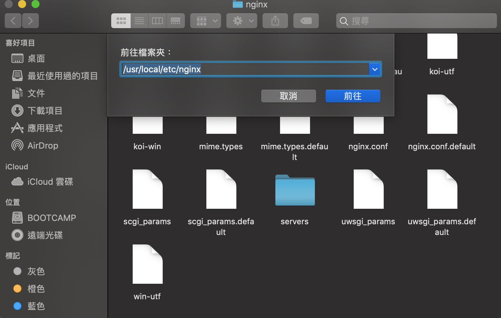
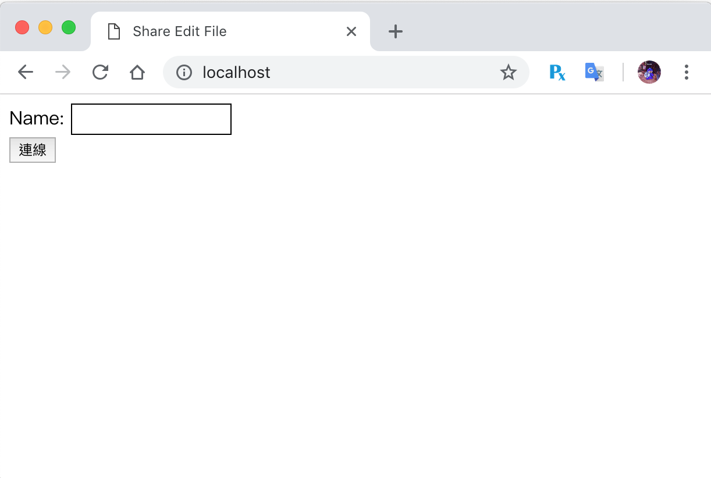
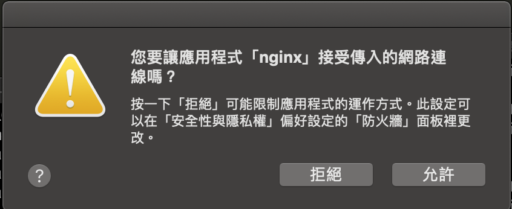
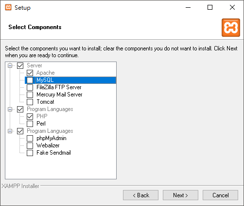
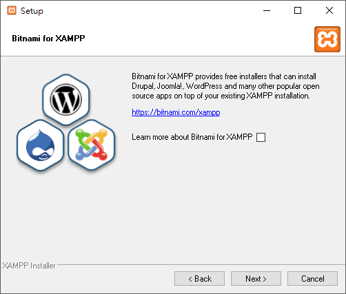
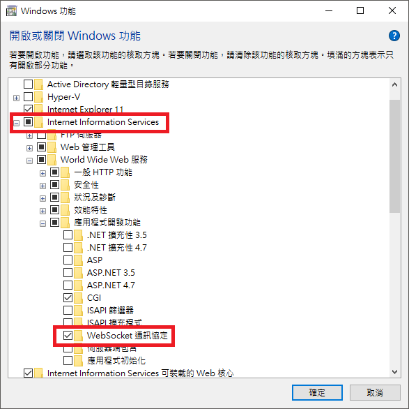
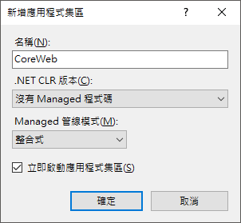
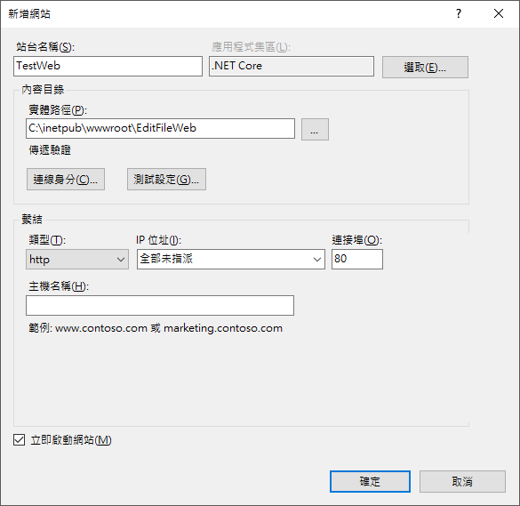
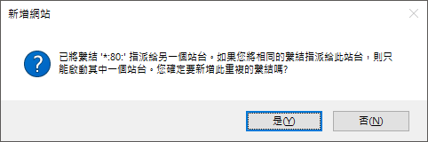

<!DOCTYPE html>
<html lang="zh-tw">
<head>
  <meta charset="utf-8">
  <meta http-equiv="X-UA-Compatible" content="IE=edge,chrome=1">
  <title>[鐵人賽Day29] 部屬Signal到Server上 - Homura&#39;s Blog</title>
  <meta name="renderer" content="webkit" />
<meta name="viewport" content="width=device-width, initial-scale=1, maximum-scale=1"/>

<meta http-equiv="Cache-Control" content="no-transform" />
<meta http-equiv="Cache-Control" content="no-siteapp" />

<meta name="theme-color" content="#f8f5ec" />
<meta name="msapplication-navbutton-color" content="#f8f5ec">
<meta name="apple-mobile-web-app-capable" content="yes">
<meta name="apple-mobile-web-app-status-bar-style" content="#f8f5ec">


<meta name="author" content="Homura Lin" />
  <meta name="description" content="既然實作都做完了，卻只能單機自己使用好像怪怪的，至少要能開放自己的內網使用才對，所以今天要來教大家怎麼把自己的signalR部署到Apac" />

  <meta name="keywords" content="Homura&#39;s Blog, IT, blog, C#, .Net, Vue.js" />


<meta name="google-site-verification" content="IS8PZiCNvYqouPO8vCB_i4giUUllqRseOoU2S7vXTfM" />


<meta name="generator" content="Hugo 0.48" />


<link rel="canonical" href="https://homura0731.github.io/post/ironman2019/ironman-day-29/" />

<link rel="apple-touch-icon" sizes="180x180" href="/apple-touch-icon.png">
<link rel="icon" type="image/png" sizes="32x32" href="/favicon-32x32.png">
<link rel="icon" type="image/png" sizes="16x16" href="/favicon-16x16.png">
<link rel="manifest" href="/manifest.json">
<link rel="mask-icon" href="/safari-pinned-tab.svg" color="#5bbad5">
<link href="https://fonts.googleapis.com/css?family=Fugaz+One" rel="stylesheet">
<link href="https://fonts.googleapis.com/css?family=Seaweed+Script" rel="stylesheet">
<link rel="stylesheet" href="https://use.fontawesome.com/releases/v5.3.1/css/all.css" integrity="sha384-mzrmE5qonljUremFsqc01SB46JvROS7bZs3IO2EmfFsd15uHvIt+Y8vEf7N7fWAU" crossorigin="anonymous">  


<link href="/dist/even.min.css?v=3.2.0" rel="stylesheet">
<link href="/lib/fancybox/jquery.fancybox-3.1.20.min.css" rel="stylesheet">


<meta property="og:title" content="[鐵人賽Day29] 部屬Signal到Server上" />
<meta property="og:description" content="既然實作都做完了，卻只能單機自己使用好像怪怪的，至少要能開放自己的內網使用才對，所以今天要來教大家怎麼把自己的signalR部署到Apac" />
<meta property="og:type" content="article" />
<meta property="og:url" content="https://homura0731.github.io/post/ironman2019/ironman-day-29/" /><meta property="article:published_time" content="2018-11-11T07:32:33&#43;08:00"/>
<meta property="article:modified_time" content="2018-11-11T07:32:33&#43;08:00"/>
<meta itemprop="name" content="[鐵人賽Day29] 部屬Signal到Server上">
<meta itemprop="description" content="既然實作都做完了，卻只能單機自己使用好像怪怪的，至少要能開放自己的內網使用才對，所以今天要來教大家怎麼把自己的signalR部署到Apac">


<meta itemprop="datePublished" content="2018-11-11T07:32:33&#43;08:00" />
<meta itemprop="dateModified" content="2018-11-11T07:32:33&#43;08:00" />
<meta itemprop="wordCount" content="2460">


<meta itemprop="keywords" content="2019鐵人賽,SignalR,ASP.NET Core," />
<meta name="twitter:card" content="summary"/>
<meta name="twitter:title" content="[鐵人賽Day29] 部屬Signal到Server上"/>
<meta name="twitter:description" content="既然實作都做完了，卻只能單機自己使用好像怪怪的，至少要能開放自己的內網使用才對，所以今天要來教大家怎麼把自己的signalR部署到Apac"/>

<!--[if lte IE 9]>
  <script src="https://cdnjs.cloudflare.com/ajax/libs/classlist/1.1.20170427/classList.min.js"></script>
<![endif]-->

<!--[if lt IE 9]>
  <script src="https://cdn.jsdelivr.net/npm/html5shiv@3.7.3/dist/html5shiv.min.js"></script>
  <script src="https://cdn.jsdelivr.net/npm/respond.js@1.4.2/dest/respond.min.js"></script>
<![endif]-->

</head>
<body>
  <div id="mobile-navbar" class="mobile-navbar">
  <div class="mobile-header-logo">
    <a href="/" class="logo">Homura&#39;s Blog</a>
  </div>
  <div class="mobile-navbar-icon">
    <span></span>
    <span></span>
    <span></span>
  </div>
</div>
<nav id="mobile-menu" class="mobile-menu slideout-menu">
  <ul class="mobile-menu-list">
    <a href="/">
        <li class="mobile-menu-item">首頁</li>
      </a><a href="/post/">
        <li class="mobile-menu-item">歸檔</li>
      </a><a href="/tags/">
        <li class="mobile-menu-item">標籤</li>
      </a><a href="/categories/">
        <li class="mobile-menu-item">分類</li>
      </a><a href="/about/">
        <li class="mobile-menu-item">關於我</li>
      </a>
  </ul>
</nav>
  <div class="container" id="mobile-panel">
    <header id="header" class="header">
        <div class="logo-wrapper">
  <a href="/" class="logo">Homura&#39;s Blog</a>
</div>

<nav class="site-navbar">
  <ul id="menu" class="menu">
    <li class="menu-item">
        <a class="menu-item-link" href="/">首頁</a>
      </li><li class="menu-item">
        <a class="menu-item-link" href="/post/">歸檔</a>
      </li><li class="menu-item">
        <a class="menu-item-link" href="/tags/">標籤</a>
      </li><li class="menu-item">
        <a class="menu-item-link" href="/categories/">分類</a>
      </li><li class="menu-item">
        <a class="menu-item-link" href="/about/">關於我</a>
      </li>
  </ul>
</nav>
    </header>

    <main id="main" class="main">
      <div class="content-wrapper">
        <div id="content" class="content">
          <article class="post">
    
    <header class="post-header">
      <h1 class="post-title">[鐵人賽Day29] 部屬Signal到Server上</h1>

      <div class="post-meta">
        <span class="post-time"> 
            <i class="far fa-calendar-alt" aria-hidden="true"></i>
          2018-11-11 
        </span>
        <div class="post-category">
            
              <i class="far fa-folder-open" aria-hidden="true"></i>
              <a href="/categories/2019%E9%90%B5%E4%BA%BA%E8%B3%BD/"> 2019鐵人賽 </a>
            
          </div>
        <span class="more-meta"> 
          <i class="fa fa-book" aria-hidden="true"></i>
          約 2460 字
        </span>
        <span class="more-meta">
          <i class="far fa-clock" aria-hidden="true"></i>
          預計閱讀 5 分鐘 
        </span>
        
      </div>
    </header>

    
    
<div class="post-toc" id="post-toc">
  <h2 class="post-toc-title">文章目錄</h2>
  
  <div class="post-toc-content always-active">
    <nav id="TableOfContents">
<ul>
<li><a href="#安裝-net-core-runtime">安裝.Net Core RunTime</a></li>
<li><a href="#publish自己的asp-net-core程式">Publish自己的ASP.NET Core程式</a></li>
<li><a href="#架設到-nginx">架設到 Nginx</a>
<ul>
<li><a href="#設置nginx代理配置">設置nginx代理配置</a></li>
</ul></li>
<li><a href="#架設到apache">架設到Apache</a>
<ul>
<li><a href="#設置apache代理">設置Apache代理</a></li>
</ul></li>
<li><a href="#架設到iis">架設到IIS</a></li>
<li><a href="#參考">參考</a></li>
</ul>
</nav>
  </div>
</div>

    
    

    
    <div class="post-content">
      

<p>既然實作都做完了，卻只能單機自己使用好像怪怪的，至少要能開放自己的內網使用才對，所以今天要來教大家怎麼把自己的<code>signalR</code>部署到<code>Apache</code>和<code>IIS</code></p>

<h1 id="安裝-net-core-runtime">安裝.Net Core RunTime</h1>

<p>首先先到<a href="https://www.microsoft.com/net/download">官網下載</a><code>Runtime</code></p>

<blockquote>
<p>只有macOS不需要裝，因為Runtime根本沒macOS版&hellip;.</p>
</blockquote>

<h1 id="publish自己的asp-net-core程式">Publish自己的ASP.NET Core程式</h1>

<p>發行非常簡單，使用指令<code>donet publish</code>就行，參數設定我們使用release，體積比較小</p>

<pre><code class="language-shell">$ dotnet publish -c Release
</code></pre>

<blockquote>
<p>這邊的<code>-c</code>等於<code>-configure</code>可以簡化成<code>-c</code></p>
</blockquote>

<p>之後成功後在你的專案裡面的路徑<code>Bin\Release\netcore版本</code>資料夾，會有個<code>publish</code>資料夾就是發行後的網站檔案，體積非常的小，這時就看出<code>.NET Core</code>的好處</p>

<p>由於官網文件只教了幾個平台範本，所以在架設之前我來說一下我試過的平台及Server軟體，MSDN文件就只介紹<code>Windows IIS</code>和<code>Linux Nginx</code>和<code>Linux Apache</code>三個，我就偏偏要用<code>macOS</code>來架設哈哈</p>

<table>
<thead>
<tr>
<th>作業系統</th>
<th>Server軟體</th>
<th>是否成功</th>
<th>成功狀況</th>
</tr>
</thead>

<tbody>
<tr>
<td>Windows 10</td>
<td>IIS</td>
<td>O</td>
<td>完美執行</td>
</tr>

<tr>
<td>Windows 10</td>
<td>Apache</td>
<td>O</td>
<td>可以執行，但是websocket啟用不了，<code>SignalR</code>會改成SSE的方式</td>
</tr>

<tr>
<td>macOS</td>
<td>Apache</td>
<td>X</td>
<td></td>
</tr>

<tr>
<td>macOS</td>
<td>Nginx</td>
<td>O</td>
<td>可以執行，版本太舊，websocket似乎不支援，<code>SignalR</code>會改成SSE的方式</td>
</tr>
</tbody>
</table>

<p>結果<code>macOS</code>在結論上都是失敗的，<code>Nginx</code>雖然有成功代理上，但是卻版本太舊好像不支援<code>WebSocket</code>，連<code>Long Polling</code>都無法，真是怪了</p>

<h1 id="架設到-nginx">架設到 Nginx</h1>

<p>Nginx的部分我用<code>macOS</code>示範，首先先用<code>Homebrew</code>安裝Nginx，如果沒裝過<code>Homebrew</code>到<a href="https://brew.sh/index_zh-tw">這邊安裝</a></p>

<pre><code class="language-shell">$ brew install nginx
</code></pre>

<blockquote>
<p>安裝可能會遇到權限問題裝不了，這時候使用<code>sudo chown -R $(whoami) /usr/local/share/man/man3</code>就OK了</p>
</blockquote>

<p>裝完後使用指令看看有沒有版本好，有就代表安裝成功</p>

<pre><code class="language-shell">$ nginx -v
</code></pre>

<p>然後我們要來把發行後的檔案Run起來，先開終端機再到上面說的publish資料夾底下，跑以下指令</p>

<pre><code class="language-shell">$ dotnet &lt;專案名&gt;.dll
</code></pre>

<p>然後去<code>https://localhost:5001</code>底下看是不是有在跑</p>

<h2 id="設置nginx代理配置">設置nginx代理配置</h2>

<p>這邊到<code>/usr/local/etc/nginx</code>底下，找不到的話可以用Finder的功能，前往然後選前往檔案夾，之後輸入路徑前往
</p>

<p>然後找到<code>nginx.conf</code>，找到Server節點，裡面有<code>listen 8080</code>，然後改成以下這樣</p>

<pre><code>server {
    listen       80;
    server_name  localhost;

    #charset koi8-r;

    #access_log  logs/host.access.log  main;

    location / {
        proxy_pass         http://localhost:5000;
        proxy_http_version 1.1;
        proxy_set_header   Upgrade $http_upgrade;
        proxy_set_header   Connection keep-alive;
        proxy_set_header   Host $host;
        proxy_cache_bypass $http_upgrade;
        proxy_set_header   X-Forwarded-For $proxy_add_x_forwarded_for;
        proxy_set_header   X-Forwarded-Proto $scheme;
    }
</code></pre>

<p>然後再執行以下指令就成功了</p>

<pre><code class="language-shell">$ sudo nginx -s reload
</code></pre>

<p>我這邊遇到<code>nginx: [error] invalid PID number &quot;&quot; in &quot;/usr/local/var/run/nginx/nginx.pid&quot;</code>這個錯誤訊息
查了一下只要多跑個指令就OK，然後再跑一次reload</p>

<pre><code class="language-shell">$ sudo nginx -c /usr/local/etc/nginx/nginx.conf
$ sudo nginx -s reload
</code></pre>

<p>成功後就能開起瀏覽器輸入<code>localhost</code>就能看到自己的<code>ASP.NET Core</code>程式
</p>

<blockquote>
<p>註：建議改塗鴉牆範例，因為文件分享有用到websocket的一部分，導致無法同步</p>
</blockquote>

<p>但是要讓內網連近來還需要多個步驟，先使用停止指令</p>

<pre><code class="language-shell">$ sudo nginx -s stop
</code></pre>

<p>使用以下指令啟用，讓外部連結進來，</p>

<pre><code class="language-shell">$ sudo brew services start nginx
</code></pre>

<p>然後會問你接受傳入的網路連線嗎？選接受</p>

<p></p>

<p>然後就能讓內網連線了，不過<code>brew</code>安裝的<code>nginx</code>似乎沒支援<code>websocket</code>，所以<code>SignalR</code>會改幫你使用<code>SSE(Server Sent Events)</code>的方式，看來還是得要<code>Linux</code>比較好XD。</p>

<h1 id="架設到apache">架設到Apache</h1>

<p>Apache我們使用<code>Win10</code>示範，首先下載<a href="https://www.apachefriends.org/zh_tw/index.html">Xampp</a>，開始安裝，他會附加一堆其他東西，我們只有<code>Apache</code>就好，<code>php</code>不能取消就讓它安裝吧!</p>

<p>
然後會問要不要安裝<code>Bitnami</code>請把勾勾取消</p>

<p></p>

<p>安裝完打開，會問防火牆要不要允許通過，選是，然後打開<code>localhost</code>就能看到xampp的簡介畫面</p>

<h2 id="設置apache代理">設置Apache代理</h2>

<p>然後我們要來修改一下設置的文件，先到路徑<code>C:\xampp\apache\conf</code>底下，使用<code>VS Code</code>打開<code>httpd.conf</code>，然後把下面的模組前面的<code>#</code>字註解拿掉，請用搜尋的方式找出來</p>

<pre><code>LoadModule proxy_http_module modules/mod_proxy_http.so
</code></pre>

<p>然後到<code>C:\xampp\apache\conf\extra</code>底下，開啟<code>httpd-vhosts.conf</code>，在最下方加入</p>

<pre><code>&lt;VirtualHost *:*&gt;
    RequestHeader set &quot;X-Forwarded-Proto&quot; expr=%{REQUEST_SCHEME}
&lt;/VirtualHost&gt;

&lt;VirtualHost *:80&gt;
    ProxyPreserveHost On
    ProxyPass / http://127.0.0.1:5000/
    ProxyPassReverse / http://127.0.0.1:5000/
    ServerName www.example.com
    ServerAlias *.example.com
    ErrorLog ${APACHE_LOG_DIR}helloapp-error.log
    CustomLog ${APACHE_LOG_DIR}helloapp-access.log common
&lt;/VirtualHost&gt;
</code></pre>

<p>在終端機目錄移動到<code>publish</code>底下，然後使用<code>dotnet</code>啟用他</p>

<pre><code class="language-shell">$ cd bin/Release/netcoreapp2.1/publish
$ dotnet &lt;專案名&gt;.dll
</code></pre>

<p>最後<code>Apache</code>重啟，這樣就成功啦！</p>

<p>測試結果是<code>Websockt</code>握手失敗，改成使用<code>SSE</code>的方式，還是能夠同步動作就是&hellip;.</p>

<blockquote>
<p>註：其實網路上很多設定我都使用過，包括<code>mod_proxy_wstunnel</code>模組啟用，設定ws協定通過，都試過沒有用，可能真的要<code>Linux</code>的<code>Apache</code>的才行。</p>
</blockquote>

<h1 id="架設到iis">架設到IIS</h1>

<p>我使用<code>Win10</code>來邦範例，首先開啟以下位置 控制台 &gt; 程式和功能 &gt; 開啟或關閉Windows功能 ，然後把以下紅框功能打勾</p>

<p></p>

<p>然後把發行的的檔案丟進以下路徑<code>C:\inetpub\wwwroot</code>，整包publish丟過去，然後改名<code>TestWeb</code></p>

<p>然後你應該就能找到你的IIS管理員了，然後把IIS管理員開啟，選左方的應用程式集區，再右邊新增應用程式集區，名稱可以隨便訂，我使用<code>.NET Core</code>當名稱，然後<code>.NET CLR版本</code>選擇<code>沒有 Managed程式碼</code>，<code>立即啟用應用程式集區</code>打勾後確定。</p>

<p></p>

<p>再來左邊的站台右鍵，新增網站，站台名稱隨便，應用程式集區選鋼鋼你新增的，路徑選鋼鋼丟進去的<code>C:\inetpub\wwwroot\TestWeb</code>，剩下都不用調整</p>

<p></p>

<p>確定之後會跳出提示，因為有預設的站台是用<code>80port</code>，我發現內網涉其他port會連不到，應該是要調特別設定，所以這邊我們選是</p>

<p></p>

<p>然後把左邊<code>Defalut Web Site</code>右鍵 &gt; 管理網站 &gt; 停止，再把剛新開的網站啟動，這樣就完成啦!</p>

<p>這樣就可以使用其他機器從內網<code>IP</code>連進你的網站了!</p>

<p>做完這篇的感想是<code>.NET Core</code>能跨平台真棒，今天大概就這樣啦!~~</p>

<h1 id="參考">參考</h1>

<ul>
<li><a href="https://www.cnblogs.com/savorboard/p/dotnet-core-publish-nginx.html">Savorboard的CNBlog</a></li>
<li><a href="https://blog.csdn.net/github_33644920/article/details/51733436">极客世杰的CSDN Blog</a></li>
<li><a href="https://blog.csdn.net/y505772146/article/details/80219690">Yusan的CSDN Blog</a></li>
<li><a href="https://docs.microsoft.com/zh-tw/aspnet/core/host-and-deploy/linux-apache?view=aspnetcore-2.1">官方文件</a></li>
</ul>

    </div>

    
    <div class="post-copyright">
  <p class="copyright-item">
    <span class="item-title">文章作者</span>
    <span class="item-content">Homura Lin</span>
  </p>
  <p class="copyright-item">
    <span class="item-title">上次更新</span>
    <span class="item-content">2018-11-11</span>
  </p>
  
  <p class="copyright-item">
    <span class="item-title">許可協議</span>
    <span class="item-content"><a rel="license noopener" href="https://creativecommons.org/licenses/by-nc-nd/4.0/" target="_blank">CC BY-NC-ND 4.0</a></span>
  </p>
  <p class="copyright-item" >
      <span class="item-content">
    <div class="fb-like" style="margin-left:10px" data-href="https://homura0731.github.io/post/ironman2019/ironman-day-29/" data-layout="standard" data-action="like" data-size="small" data-show-faces="false" data-share="false"></div>
    </span> 
  </p>
</div>

    
    

    <footer class="post-footer">
      <div class="post-tags">
          
            <span class="tags">
              <a href="/tags/2019%E9%90%B5%E4%BA%BA%E8%B3%BD/">2019鐵人賽</a>
            </span>
          
            <span class="tags">
              <a href="/tags/signalr/">SignalR</a>
            </span>
          
            <span class="tags">
              <a href="/tags/asp.net-core/">ASP.NET Core</a>
            </span>
          
        </div>

      
      <nav class="post-nav">
        
        
          <a class="next" href="/post/ironman2019/ironman-day-28/">
            <span class="next-text nav-default">[鐵人賽Day28] 實作Web即時共同編輯文件 (8) - 最後的BUG修正&#43;小功能添加</span>
            <span class="next-text nav-mobile">下一篇</span>
            <i class="iconfont icon-right"></i>
          </a>
      </nav>
    </footer>
  </article>
        </div>
        
<script type="text/javascript" src="//s7.addthis.com/js/300/addthis_widget.js#pubid=ra-5ba5d55ffb7ee473"></script> 
  <div id="disqus_thread"></div>
    <script type="text/javascript">
    (function() {
      
      
      if (window.location.hostname === 'localhost') return;

      var dsq = document.createElement('script'); dsq.type = 'text/javascript'; dsq.async = true;
      var disqus_shortname = 'homura0731';
      dsq.src = '//' + disqus_shortname + '.disqus.com/embed.js';
      (document.getElementsByTagName('head')[0] || document.getElementsByTagName('body')[0]).appendChild(dsq);
    })();
    </script>
    <noscript>Please enable JavaScript to view the <a href="http://disqus.com/?ref_noscript">comments powered by Disqus.</a></noscript>

  

      </div>
    </main>

    <footer id="footer" class="footer">
      <div class="social-links">
      <a href="mailto:a4252690@gmail.com" class="iconfont icon-email" title="email"></a>
      <a href="https://stackoverflow.com/users/10272735/homura-lin?tab=profile" class="iconfont icon-stack-overflow" title="stack-overflow"></a>
      <a href="https://www.facebook.com/kunhan1" class="iconfont icon-facebook" title="facebook"></a>
      <a href="https://www.linkedin.com/in/kun-han-lin-227676170/" class="iconfont icon-linkedin" title="linkedin"></a>
      <a href="https://github.com/homura0731" class="iconfont icon-github" title="github"></a>
  <a href="https://homura0731.github.io/index.xml" type="application/rss+xml" class="iconfont icon-rss" title="rss"></a>
</div>

<div class="copyright">
  <span class="power-by">
    Powered by <a class="hexo-link" href="https://gohugo.io">Hugo</a>
  </span>
  <span class="division">|</span>
  <span class="theme-info">
    主題 - 
    <a class="theme-link" href="https://github.com/olOwOlo/hugo-theme-even">Even</a>
  </span>

  

  <span class="copyright-year">
    &copy; 
    
      2017 - 
    2018
    <span class="heart">
      <i class="iconfont icon-heart"></i>
    </span>
    <span class="author">Homura Lin</span>
  </span>
</div>
    </footer>

    <div class="back-to-top" id="back-to-top">
      <i class="iconfont icon-up"></i>
    </div>
  </div>
  
<script src="/lib/highlight/highlight.pack.js?v=20171001"></script><script type="text/javascript" src="/lib/jquery/jquery-3.2.1.min.js"></script>
  <script type="text/javascript" src="/lib/slideout/slideout-1.0.1.min.js"></script>
  <script type="text/javascript" src="/lib/fancybox/jquery.fancybox-3.1.20.min.js"></script>


<script type="text/javascript" src="/dist/even.min.js?v=3.2.0"></script>


<div id="fb-root"></div>
<script>(function(d, s, id) {
  var js, fjs = d.getElementsByTagName(s)[0];
  if (d.getElementById(id)) return;
  js = d.createElement(s); js.id = id;
  js.src = 'https://connect.facebook.net/zh_TW/sdk.js#xfbml=1&version=v3.1&appId=252580568480540&autoLogAppEvents=1';
  fjs.parentNode.insertBefore(js, fjs);
}(document, 'script', 'facebook-jssdk'));</script>
</body>
</html>
